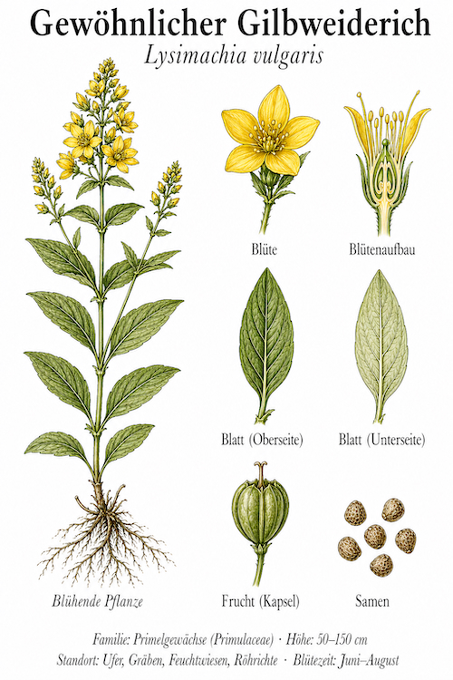
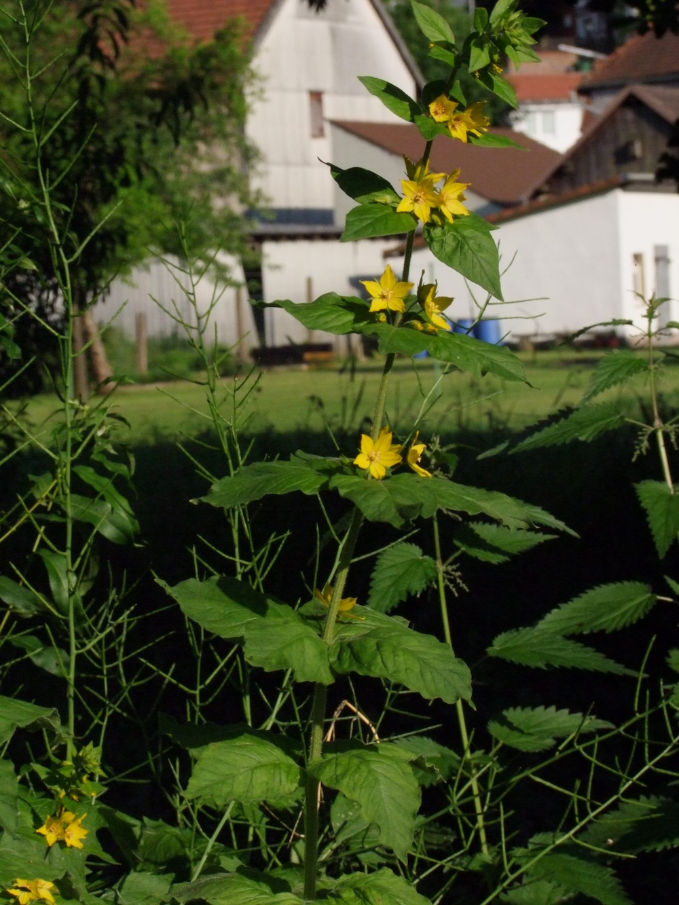
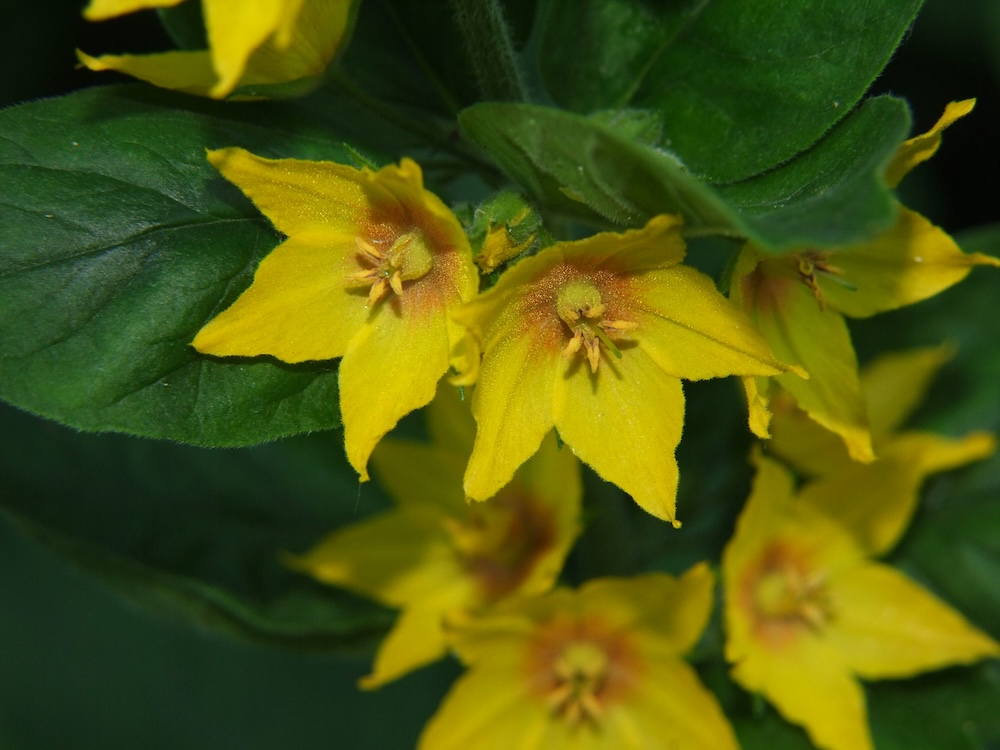

Goldgelbe Sterne am Bachufer — eine Pflanze des Friedens.



König Lysimachus und der Friede
Der griechische Name geht auf König Lysimachos zurück (3. Jh. v. Chr.) — der laut Plinius dem Älteren entdeckt haben soll, dass diese Pflanze beruhigend wirkt. Streitende Stiere konnten angeblich durch einen Gilbweiderich-Strauß zwischen ihren Hörnern beruhigt werden. Wahr oder Legende? Egal — der Name „Friedensbringer“ ist geblieben.
Pollen-Schenker für eine spezialisierte Biene
Der Gilbweiderich produziert KEINEN Nektar — nur Pollen und ein fettes Öl in Drüsen. Damit ist er auf eine ganz spezielle Bestäuberin angewiesen: die Schenkelbiene Macropis europaea. Sie sammelt das Öl und Pollen für ihre Brut. Ohne Gilbweiderich keine Schenkelbiene — und umgekehrt. Eine perfekte gegenseitige Abhängigkeit, die schon seit Tausenden von Jahren besteht.
Wissenswertes & Merksätze
Erkennen leicht gemacht
Aufrechter, oft drüsig-haariger Stängel. Blätter gegenständig oder zu drei in Quirlen, lanzettlich. Goldgelbe fünfzählige Blüten in lockeren Rispen, oben am Stängel.
Achtung Verwechslung
Es gibt mehrere Gilbweiderich-Arten — der Gemeine ist klar erkennbar an Größe (über 50 cm), den Quirlblättern und dem Wuchsort (Feuchtwiesen). Der Punktierte Gilbweiderich (L. punctata) ist ein häufig verwilderter Garten-Verwandter — kleiner und mit Tropfen statt einheitlichem Gelb.